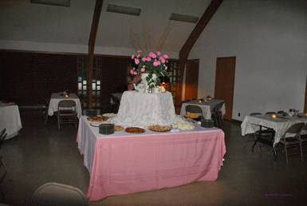
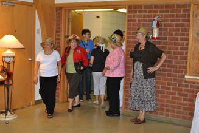
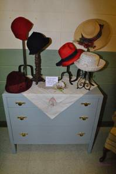
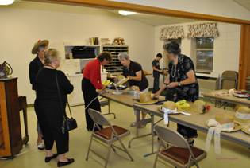
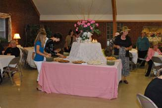
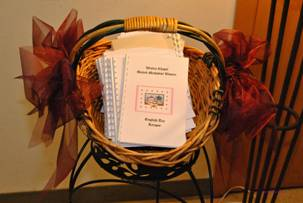

November 9, 2009
The Wesley Chapel United Methodist Women met in the Rose Room. Alva Sells and friends from Matton’s Grove UMC showed slides and talked of their mission trip summer. A very enlightening program. Goody bags were assembled for the shut-ins and taken to be distributed later in the week. The UMW went to Stanly Manor on Saturday, November 14 for the patients monthly birthday party. Gifts for the birthday persons were distributed. The patients really appreciated a fun party. The December meeting will be on Monday, Dec.14, at 7:30 PM. There will be no formal program. Bring a finger food to be shared and bring a Christmas tree ornament to be exchanged. Come and enjoy Christmas time with fellowship and sharing.
For our fall kick-off meeting, we wanted to do something really special. A committee was formed to plan the event.Martha Reddeck chaired the committee and it was decided to have an English Tea party. Recipes were researched and handed out to members to make and taste test. Other committee members brought in linens, serving pieces and decorations for the fellowship hall. Debbie Burkette was in charge of the tea room decor.
For the program, Kim Sheeks, a Lutheran minister’s wife and school teacher agreed to come and do her presentation of the “Hat Lady.” Since the program was to be about the many hats that women wear, the idea came up for party participants to come early and make a fun hat. We ordered a supply of straw gardening hats and brought in various ribbons, flowers, buttons, feathers, etc. with which to trim the hats. Since we were having a renowned speaker, it was decided to ask the Matton’s Grove UMC Women to the party. Neighbors and friends were also invited.
From Sunday afternoon until mid-afternoon on Monday, Debbie and her family turned the fellowship hall into a fabulous English Tea Room. Tables were covered with fine cloths and crystal candleholders. Napkins featured a tea pot design. Cleo Shaver brought her teapot collection and there were a few on each table along with a nosegay of roses. The serving tables featured large flower arrangements and candles. Lamps were scattered around the room on small tables. In the hallway a small low boy chest was decorated with hats from different eras from Julie Kluttz’s collection. They were displayed on wrought iron and tall wood candlesticks. Debbie made a card to place with the hats, with the following inscription: "This table is in honor and recognition of all godly women and the many hats we wear."

Everything was prepared. Though it rained all day, the women were ready for a party. Early arrivals gathered in the choir room and had fun with hats, flowers, ribbons, feathers and hot glue guns. It was decided that we would wear our hats to church on Sunday, so that everyone who didn’t come would see what fun they missed.

As invited guests arrived, they were welcomed into the beautiful candlelit tearoom. Soft classical music played in the background as members and guests were seated. Each participant was given a recipe book containing all the recipes served at the tea. These beautiful booklets were prepared and printed by Cleo Shaver and Debbie Clark. Jellies, preserves, lemon curd, honey and butter were on each table. Tea items consisted of various finger sandwiches, fruit bars, cookies, cheese straws and warm scones at a beautifully appointed round table in the center of the room. A selection of hot teas and iced teas was available at the tea table. Wesley Women refilled tea at each table as the evening progressed. Soft music and quiet conversation and candle lit tables helped one to believe that they were transported to a world of beauty and gentility that is often hard to find in today’s fast paced world.

After guests had their fill of tasty teas and sandwiches, they were directed to the church sanctuary for the program presented by Kim Sheets, known far and wide as “The Hat Lady.” She presented a fast paced humorous program about the different hats women wear. It is difficult to describe the next fun filled hour. She had approximately 150 fun hats and a story or sentence to describe each one and how it connected to women’s lives. Her nonstop often hilarious, sometimes poignant monologue had her audience enthralled and laughing nonstop. Then her monologue would catch her audience with a spiritual message that would almost bring tears along with the laughter. A most unexpected, beautiful presentation that all who were present will not soon forget.
The Wesley Women worked tirelessly to bring UMW members, church women from the neighboring churches and friends to a beautiful, inspiring evening that will bring smiles as often as we remember it. A mixture of beauty, good tea, fun, fellowship and spirit filled message will not be soon forgotten by all that attended. Maybe this program will become an annual event to be anticipated as fall approaches each year.

The Wesley Chapel UMW made a donation in honor of our guest, Kim Sheets, to a children’s charity that she chose to honor. Kim is one spiritual woman who used humor and fun to bring a message of God’s love to all that are fortunate to hear her message.
A great thank you to the Wesley women who worked tirelessly to make this evening a warm memory for a long time to come.